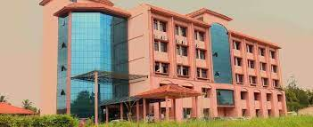

Carrier Objective
To work in a competitive environment that effectively utilizes my analytical, interpersonal, leadership and organizational skills to conceive and achieve solutions. The solutions which help the organization in not only meeting its targets, but also allowing it to grow, thereby, enhancing my own skills as an individual and as a key player in the organization's development.
Educational Qualification
| Institution | Course/Stream | Year of Passing | Marks/CGPA |
|---|---|---|---|
|
Cochin University Of Science And Technology, Kochi. |
B.Tech (Information Technology) |
2016 |
7.16 (CGPA) |
|
R.P.M Inter College, Madhepura, Bihar. |
Class XII, PCM , Bihar School Examination Board |
2011 |
73.0% |
|
H.S.Ramganj Sansarpur,Khagaria,Bihar. |
Class X, Bihar School Examination Board |
2009 |
85.4% |
Academic Projects And Seminar

Mini Project
Employee Management System: Application based project to keep the record & details of employee using Java and My SQL.
Online Application System: Web based project deals with process of automating the applications of students, using PHP & My SQL.
Deforestation: Multimedia based project done using 3ds Studio Max.
Major Project
Student Attendance System Using Fingerprint Recognition: Web based project deals with process of making attendance of student using fingerprint recognition by using advanced java, MySQL, apache tomcat server & fingerprint scanner.
Seminar
Presented IEEE paper,on ETHICAL HACKING.
Professional Summary
A well-versed SAP.ABAP Application Developer with Around 4.5 years of experience.
Understanding business process, study and analyze to design solutions.
Exposure in SAP functional areas including HCM and SD.
Analyzing Functional specification and Preparation of Technical design document.
Having experience in SAP ABAP on HANA.
Good team player with excellent technical and interpersonal skills.
Positive work attitude and self-motivated to work independently and well as in a team.
Technical Profile
Operating Systems : Windows
Programming Languages : C, Java, Php
Web Technologies : Html, Javascript
Database Softwares : MySQL, Hana Database
JSE Technologies : JDBC
JEE Technologies : Servlets, JSP
Servers : Tomcat
IDEs : MyEclipse
MS Office : MS Word, MS Excel, MS PowerPoint
SAP ABAP: - Data Dictionary, Report, Dialog programming, Interface programming, OOPS ABAP, Enhancement, BDC, BAPI, Smart form, Adobe form, IDOC, Webdynpro
Functional Area: - SD, HCM
ABAP on HANA: - CDS view, ODATA, ABAP Managed Database Procedure
Data structure and Algorithm
Info types : - Creation of custom info types, enhancements
Transport requests
SAP AIF
Trace set up, analysis and proactive code optimization
Strong problem solving and Debugging skills
Performance tuning and Code Review
OSS notes
SAP BW:- routines , enhancement for variable in CMOD
Professional Experience

Organization : IBM India Private limited
Client : IBM Internal Account - HR
Role : SAP.ABAP Application Developer and Workflow Administrator
Duration : 23rd Jan 2017 to 12th Jan 2020
Environment : SAP ERP 7.0
| Project Name | Highlights |
|---|---|
| IBM HRMS Project | Info type creation and enhancement, workflow, distribution list, table creation and maintenance, note analysis, live compare tool, transport request creation and moving from one system to another, report program, workday Integration, enhancement, IDOC, created interface to send data from one server to another using file, Webdynpro, live Compare tool, debugged varies program and transaction code. |
Organization : Cognizant Technology Solutions India Pvt Ltd
Client : Philips India Pvt Ltd
Role : SAP.ABAP Programmer Analyst
Duration : 17th Jan 2020 to till now
Environment : SAP ERP 7.4
| Project Name | Highlights |
|---|---|
| Philips Argentina Facture - CC Nam - Delego Project | IDOC Extension, Implemented BADI for IDOC function module BAPI and for transaction code VA01/VA02, Business function, Provided Transition KT and Hyper care support. |
| Philips EDI UK project | Inbound IDOC for order creation, Outbound IDOC for Order response, Smart forms, BADI implementation, Routine for Pricing, Provided Transition KT and Hyper care support. |
| Philips- DEC 2019-PRD-migration project | Analyze the existing code, ODATA services, CDS View, ABAP Managed Procedure. |
| Philips-concur-DEC 2018 | Set up the SAP AIF configuration to create interface, Activated Services, Implemented notes, Provided transition KT to support team and end user. |
| Philips-SAP BW Requirements | Start routine, end routine, User exit, debugged routine and user exit, bug fixing in SIT and UAT Phase. |
Achievements
Secured highest Marks in Class Xth Board in School.
Received “Manager Choice Award” and “Eminence and Excellence Cash Award” from manager.
Got the appreciations for resolving defects, providing support to the test team, working on SP upgrade activities and live compare tool for notes analysis from manager.
Strengths
Good communication skills
Leadership and Team building skills
Dynamic
Repeated research for improving self-abilities
Self motivated
Adaptive
Language Known
English and Hindi
Interest
Surfing Internet, YouTube and Facebook.
Watching movies & hanging out with friend.
Personal Information
Date of Birth: 12.04.1994
Nationality: Indian
Marital Status: Single
Valid Indian Passport: Yes
Contact Details
Email:rupeshkumar9961@gmail.com
Phone:9961023746